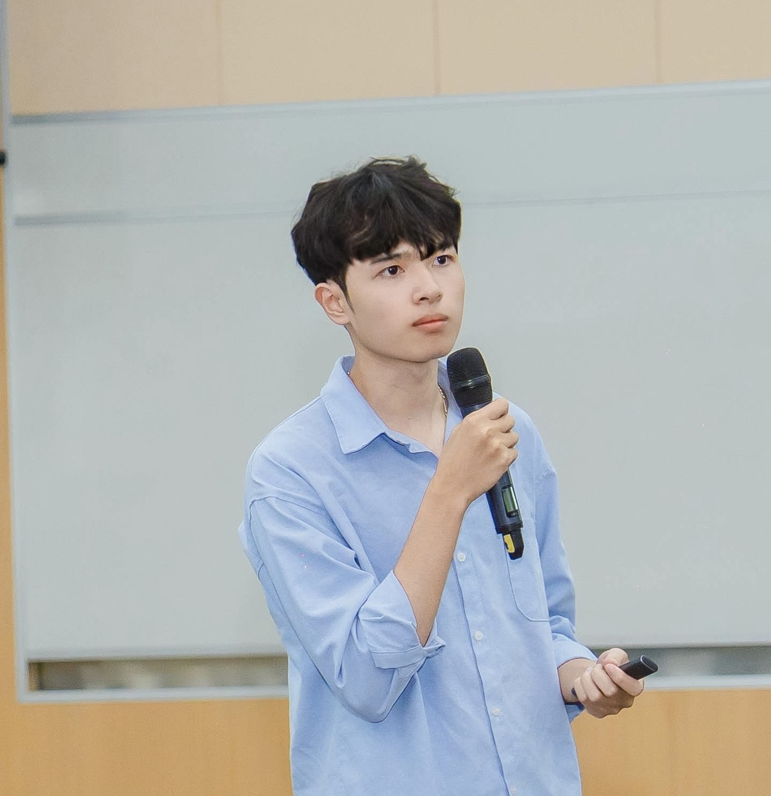

|
Trong Duc Nguyen AboutHi! I am a PhD student in Computer Science at VinUniversity, where my research focuses on developing Foundation Models for Healthcare. I am passionate about leveraging large-scale AI to solve critical challenges in medical imaging and diagnostics. I received my Bachelor of Science in Data Science from VNU University of Science, graduating 1st-rank in my cohort. My background includes experience as an AI Engineer and Research Assistant, where I worked on various computer vision and deep learning applications before focusing on AI for healthcare.

Research InterestsMy research focuses on developing and applying Foundation Models for Healthcare. I am particularly interested in leveraging large-scale AI to address critical challenges in medical imaging and diagnostics, aiming to build robust and reliable systems for real-world clinical applications. News2025
2024
PublicationsC = Conference, S = Submitted Manuscript.
|